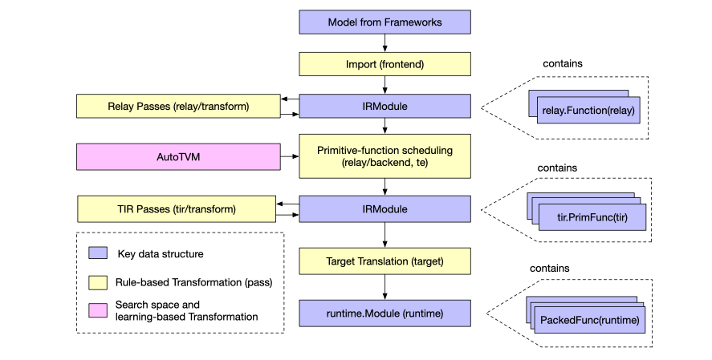

AWS Sagemaker Neo¶
The issue: optimizing an ML model for different software, hardware etc. is really hard. This is especially true if you are trying to make your model work for inference on phones, laptops or some other device that does not have the same infrastructure stack that you developed your model on. Building out the conditional cases to support different combinatorial stacks is time consuming and requires the development of lots of expertise.
Proposed solution: A custom-built machine learning compiler and runtime environment, called AWS Sagemaker Neo (open sourced as the Neo-AI project). The runtime is built to be extremely lightweight (1 mb storage, and 2 mb memory), making it much easier to run on a variety of operating systems and processors. The compiler is built off of TVM, an open source machine learning compiler backend.
TVM¶
The TVM compiler looks to be the driving force behind the inter-hardware, intersoftware operability that Sagemaker Neo is providing on AWS (at least for ANNs, they have a separate framework for decision trees). The goal of Apache TVM is to take a model that was created in a specific deep learning library, in a specific programming language on a specific hardware stack, and to translate it into an infrastructure agnostic representation called an IRModule. The initial transformation into an IR module contains a functional representation of a full model, and is entirely deterministic. Second, TVM takes this agnostic representation, decomposes it into individual components (e.g. conv layers) and optimizes each of these components for the hardware you have in mind. This process generates a second framework agnostic IRModule, but generally at a lower level of primitive functions. Finally, the optimized IRModule is translated to the right format for the target platform (a different OS, a phone) as a compiled artifact. This artifact can be accessed with an API available in a variety of different languages. An interesting question here is if the platform-agnostic nature of working with a compiled framekwork is itself already useful for us as a research group.
Back to Sagemaker Neo¶
With the understanding of TVM as a platform agnostic model compiler, we can understand Sagemaker Neo as a special case, where we are taking any existing model, and compiling it to work best on the Sagemaker Neo runtime (which presumably has been built to optimize the benefits of TVM on a variety of available devices). An immediate application for us would be to take containerized environments from Sagemaker Neo and host them on NeuroCAAS instances in an IaC framework for increaed efficiency.
Conclusions¶
For this to be useful for us, we would have to take a few steps first:
understand how sagemaker containers can best host our existing (bare AMI) analyses, and choose some candidate analyses to try out.
choose some hardware that we think would be a good candidate for Sagemaker Neo (p3? INF1?).
determine where in our workflow the compilation process for our models should come. One option would be to return a compiled model post-training, instead of a model folder. This is in some senses more accessible, but would be less familiar to the neuroscience community.
References: